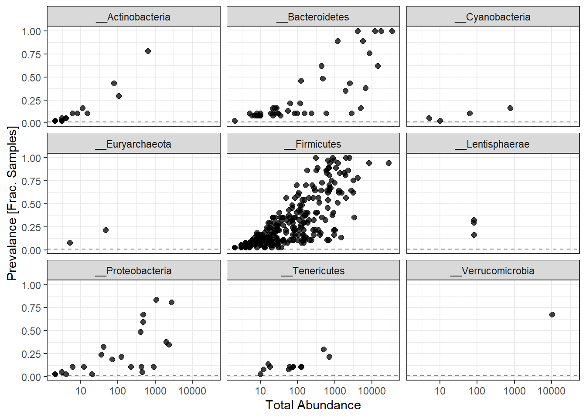
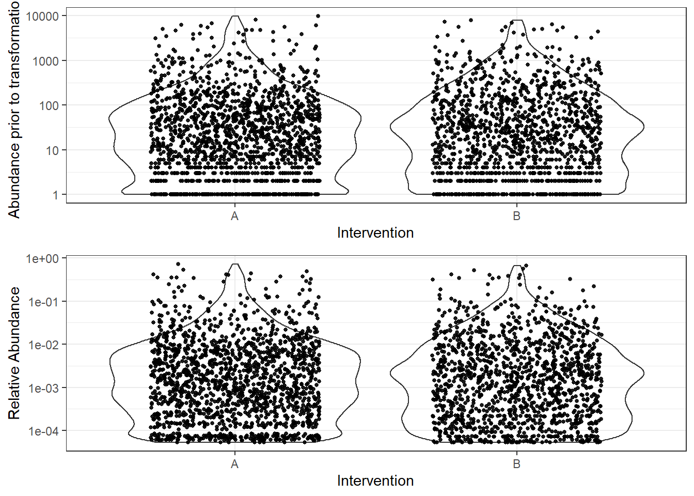
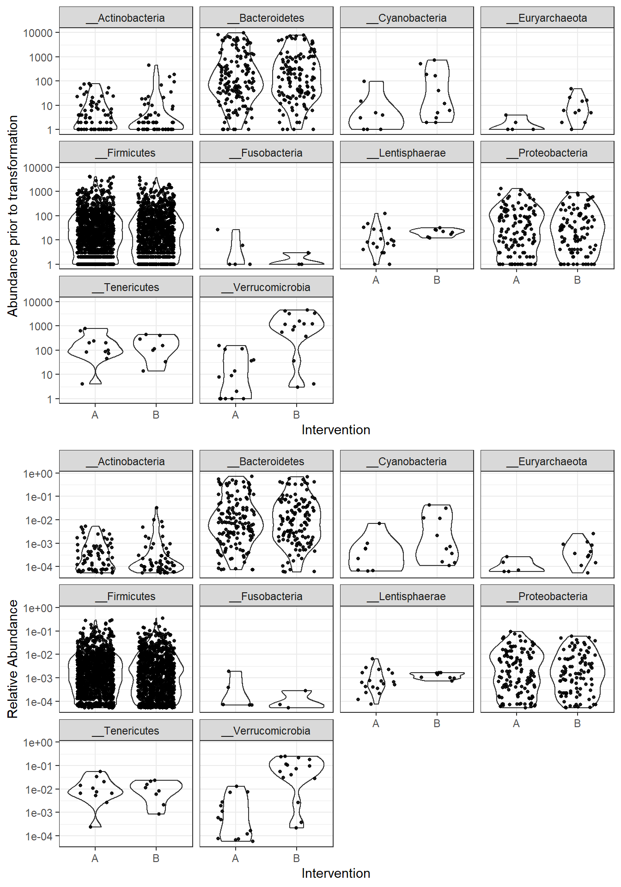
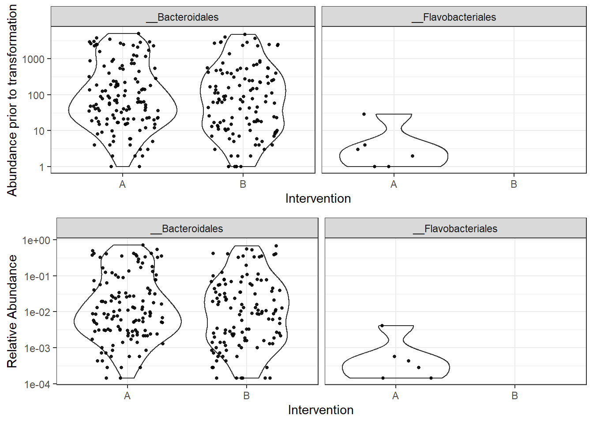
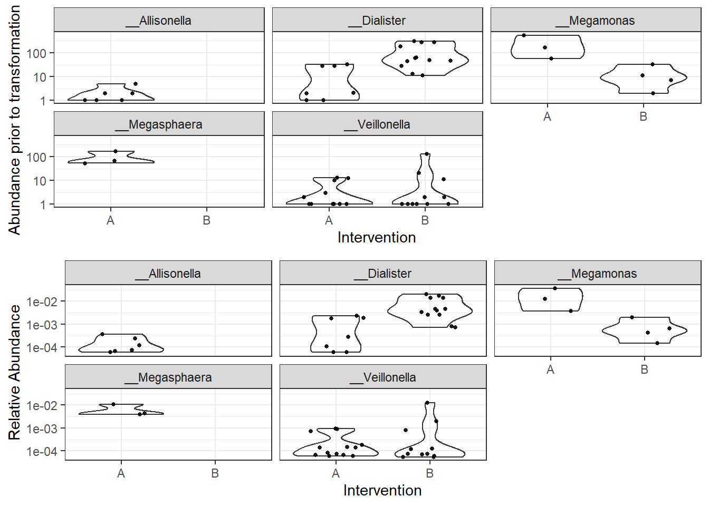
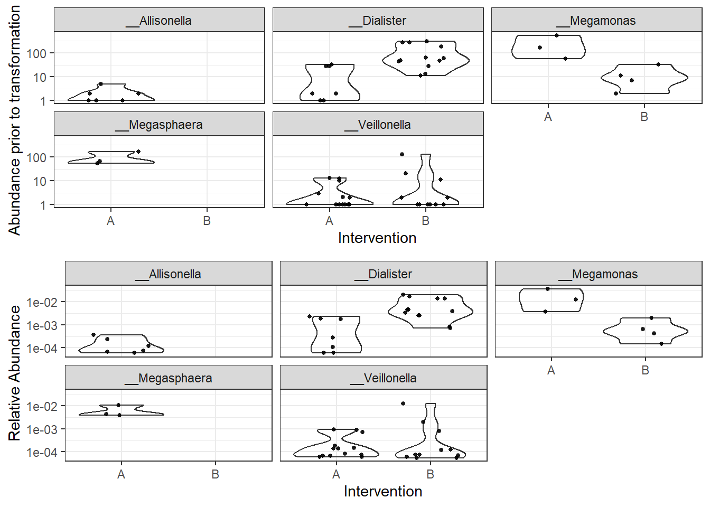
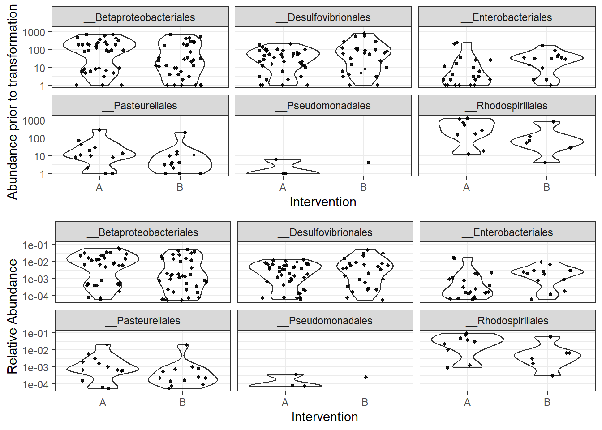
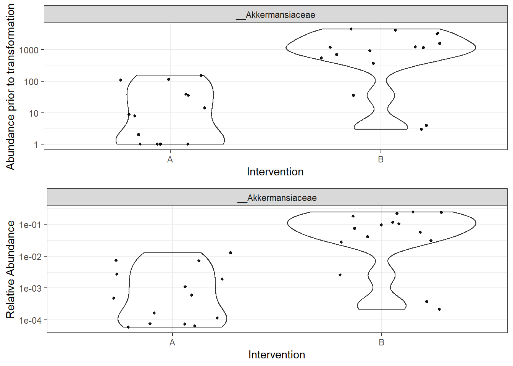

Data Processing, Checking, and Exploration
Last updated: 2020-06-16
Checks: 6 1
Knit directory: Fiber_Intervention_Study/
This reproducible R Markdown analysis was created with workflowr (version 1.6.2). The Checks tab describes the reproducibility checks that were applied when the results were created. The Past versions tab lists the development history.
The R Markdown file has unstaged changes. To know which version of the R Markdown file created these results, you’ll want to first commit it to the Git repo. If you’re still working on the analysis, you can ignore this warning. When you’re finished, you can run wflow_publish to commit the R Markdown file and build the HTML.
Great job! The global environment was empty. Objects defined in the global environment can affect the analysis in your R Markdown file in unknown ways. For reproduciblity it’s best to always run the code in an empty environment.
The command set.seed(20191210) was run prior to running the code in the R Markdown file. Setting a seed ensures that any results that rely on randomness, e.g. subsampling or permutations, are reproducible.
Great job! Recording the operating system, R version, and package versions is critical for reproducibility.
Nice! There were no cached chunks for this analysis, so you can be confident that you successfully produced the results during this run.
Great job! Using relative paths to the files within your workflowr project makes it easier to run your code on other machines.
Great! You are using Git for version control. Tracking code development and connecting the code version to the results is critical for reproducibility.
The results in this page were generated with repository version a16e6ef. See the Past versions tab to see a history of the changes made to the R Markdown and HTML files.
Note that you need to be careful to ensure that all relevant files for the analysis have been committed to Git prior to generating the results (you can use wflow_publish or wflow_git_commit). workflowr only checks the R Markdown file, but you know if there are other scripts or data files that it depends on. Below is the status of the Git repository when the results were generated:
Ignored files:
Ignored: .Rhistory
Ignored: .Rproj.user/
Ignored: code/.Rhistory
Ignored: reference-papers/Dietary_Variables.xlsx
Ignored: reference-papers/Johnson_2019.pdf
Ignored: renv/library/
Ignored: renv/staging/
Untracked files:
Untracked: analysis/glme_microbiome_genus_subset.Rmd
Untracked: data/analysis-data/DataDictionary_TOTALS_2018Record.xls
Untracked: tab/tables_results_2020-06-08.zip
Untracked: tab/tables_results_2020-06-08/
Unstaged changes:
Modified: analysis/data_processing.Rmd
Modified: analysis/glme_microbiome.Rmd
Modified: analysis/microbiome_diet_trends.Rmd
Modified: code/get_cleaned_data.R
Modified: code/microbiome_statistics_and_functions.R
Modified: fig/figure2.pdf
Modified: fig/figure3.pdf
Modified: fig/figure4.pdf
Modified: fig/figure4_final_microbiome_diet_variables_over_time.pdf
Modified: fig/figure4_legend.pdf
Note that any generated files, e.g. HTML, png, CSS, etc., are not included in this status report because it is ok for generated content to have uncommitted changes.
These are the previous versions of the repository in which changes were made to the R Markdown (analysis/data_processing.Rmd) and HTML (docs/data_processing.html) files. If you’ve configured a remote Git repository (see ?wflow_git_remote), click on the hyperlinks in the table below to view the files as they were in that past version.
| File | Version | Author | Date | Message |
|---|---|---|---|---|
| html | 51b6275 | noah-padgett | 2020-02-20 | Build site. |
| Rmd | 1c719ff | noah-padgett | 2020-02-20 | updated output window size |
| html | 1c719ff | noah-padgett | 2020-02-20 | updated output window size |
| html | 4aac91f | noah-padgett | 2020-01-30 | update home page |
| Rmd | 2914b72 | noah-padgett | 2020-01-30 | updated data prepocessing page |
| html | 2914b72 | noah-padgett | 2020-01-30 | updated data prepocessing page |
Make table of sequencial cut-offs where we removed OTUs
This page contains the investigation of the raw data (OTUs) to identify if outliers are present or whether other issues emerge that may influence our results in unexpected ways. This file goes through the following checks:
- Removal of Phylum NA features
- Computation of total and average prevalence in each Phylum
- Removal Phyla with 1% or less of all samples
- Computation of total read count for each Phyla
- Plotting taxa prevalence vs total counts - identify a natural threshold if clear, if not use 5%
- Merging taxa to genus rank/level
- Abundance Value Transformations
- Plotting of abundance values by “Intervention A or B” before transformation and after
- Checking of any bimodal distributions using “subset_taxa” function and plot by “intervention”
Taxonomic Filtering
0. Sample Reads, Totals, and Rarifying
sampleReads <- sample_sums(phylo_data0)
# Total quality Reads
sum(sampleReads)[1] 532557# Average reads
mean(sampleReads)[1] 14393.43# max sequencing depth
max(sampleReads)[1] 18990# rarified to an even depth of
phylo_data0 <- rarefy_even_depth(phylo_data0, replace = T, rngseed = 20200101)`set.seed(20200101)` was used to initialize repeatable random subsampling.Please record this for your records so others can reproduce.Try `set.seed(20200101); .Random.seed` for the full vector...25OTUs were removed because they are no longer
present in any sample after random subsampling...# even depth of:
sample_sums(phylo_data0)Greathouse.FIBER100704 Greathouse.FIBER101008 Greathouse.FIBER100504
7004 7004 7004
Greathouse.FIBER100801 Greathouse.FIBER100812 Greathouse.FIBER100101
7004 7004 7004
Greathouse.FIBER100501 Greathouse.FIBER100301 Greathouse.FIBER100201
7004 7004 7004
Greathouse.FIBER101501 Greathouse.FIBER100308 Greathouse.FIBER100104
7004 7004 7004
Greathouse.FIBER101304 Greathouse.FIBER100912 Greathouse.FIBER100208
7004 7004 7004
Greathouse.FIBER100808 Greathouse.FIBER100708 Greathouse.FIBER101012
7004 7004 7004
Greathouse.FIBER100212 Greathouse.FIBER100904 Greathouse.FIBER100901
7004 7004 7004
Greathouse.FIBER101312 Greathouse.FIBER101201 Greathouse.FIBER100204
7004 7004 7004
Greathouse.FIBER101504 Greathouse.FIBER100804 Greathouse.FIBER101512
7004 7004 7004
Greathouse.FIBER101001 Greathouse.FIBER100304 Greathouse.FIBER100701
7004 7004 7004
Greathouse.FIBER101301 Greathouse.FIBER101508 Greathouse.FIBER100712
7004 7004 7004
Greathouse.FIBER100512 Greathouse.FIBER100908 Greathouse.FIBER101004
7004 7004 7004
Greathouse.FIBER100312
7004 1. Removal of Phylum NA features
# show ranks
rank_names(phylo_data0)[1] "Kingdom" "Phylum" "Class" "Order" "Family" "Genus" # table of features for each phylum
table(tax_table(phylo_data0)[,"Phylum"], exclude=NULL)
__Actinobacteria __Bacteroidetes __Cyanobacteria
18 44 4
__Epsilonbacteraeota __Euryarchaeota __Firmicutes
1 2 317
__Fusobacteria __Lentisphaerae __Proteobacteria
2 3 22
__Synergistetes __Tenericutes __Verrucomicrobia
1 12 1 Note that no taxa were labels as NA so none were removed.
2. Computation of total and average prevalence in each Phylum
# compute prevalence of each feature
prevdf <- apply(X=otu_table(phylo_data0),
MARGIN= ifelse(taxa_are_rows(phylo_data0), yes=1, no=2),
FUN=function(x){sum(x>0)})
# store as data.frame with labels
prevdf <- data.frame(Prevalence=prevdf,
TotalAbundance=taxa_sums(phylo_data0),
tax_table(phylo_data0))Compute the totals and averages abundances.
totals <- plyr::ddply(prevdf, "Phylum",
function(df1){
A <- cbind(mean(df1$Prevalence), sum(df1$Prevalence))
colnames(A) <- c("Average", "Total")
A
}
) # end
totals Phylum Average Total
1 __Actinobacteria 4.888889 88
2 __Bacteroidetes 11.159091 491
3 __Cyanobacteria 3.250000 13
4 __Epsilonbacteraeota 3.000000 3
5 __Euryarchaeota 5.500000 11
6 __Firmicutes 9.835962 3118
7 __Fusobacteria 2.500000 5
8 __Lentisphaerae 9.666667 29
9 __Proteobacteria 9.863636 217
10 __Synergistetes 3.000000 3
11 __Tenericutes 4.583333 55
12 __Verrucomicrobia 25.000000 25The Phylum that appear to be quite low in abundance are Cyanobacteria, Epsilonbacteraeota, Euryarchaeota, Fusobacteria and Synergistetes. However, any of the taxa under a total of 100 may be suspect. First, we will remove the taxa that are clearly too low in abudance (<=5).
filterPhyla <- totals$Phylum[totals$Total <= 5, drop=T] # drop allows some of the attributes to be removed
phylo_data1 <- subset_taxa(phylo_data0, !Phylum %in% filterPhyla)
phylo_data1phyloseq-class experiment-level object
otu_table() OTU Table: [ 423 taxa and 37 samples ]
sample_data() Sample Data: [ 37 samples by 90 sample variables ]
tax_table() Taxonomy Table: [ 423 taxa by 6 taxonomic ranks ]
phy_tree() Phylogenetic Tree: [ 423 tips and 422 internal nodes ]Next, we explore the taxa in more detail next as we move to remove some of these low abundance taxa.
3. Removal Phyla with 1% or less of all samples (prevalence filtering)
prevdf1 <- subset(prevdf, Phylum %in% get_taxa_unique(phylo_data1, "Phylum"))4. Total count computation
# already done above ()5. Threshold identification
ggplot(prevdf1, aes(TotalAbundance+1,
Prevalence/nsamples(phylo_data0))) +
geom_hline(yintercept=0.01, alpha=0.5, linetype=2)+
geom_point(size=2, alpha=0.75) +
scale_x_log10()+
labs(x="Total Abundance", y="Prevalance [Frac. Samples]")+
facet_wrap(.~Phylum) + theme(legend.position = "none")
Note: for plotting purposes, a \(+1\) was added to all TotalAbundances to avoid a taking the log of 0.
Next, we define a prevalence threshold, that way the taxa can be pruned to a prespecified level. In this study, we used 0.01 (1%) of total samples.
prevalenceThreshold <- 0.01*nsamples(phylo_data0)
prevalenceThreshold[1] 0.37# execute the filtering to this level
keepTaxa <- rownames(prevdf1)[(prevdf1$Prevalence >= prevalenceThreshold)]
phylo_data2 <- prune_taxa(keepTaxa, phylo_data1)6. Merge taxa (to genus level)
genusNames <- get_taxa_unique(phylo_data2, "Genus")
#phylo_data3 <- merge_taxa(phylo_data2, genusNames, genusNames[which.max(taxa_sums(phylo_data2)[genusNames])])
# How many genera would be present after filtering?
length(get_taxa_unique(phylo_data2, taxonomic.rank = "Genus"))[1] 155## [1] 49
phylo_data3 = tax_glom(phylo_data2, "Genus", NArm = TRUE)7. Relative Adbundance Plot
plot_abundance = function(physeq, title = "", ylab="Abundance"){
# Arbitrary subset, based on Phylum, for plotting
#p1f = subset_taxa(physeq, Phylum %in% "__Firmicutes")
mphyseq = psmelt(physeq)
mphyseq <- subset(mphyseq, Abundance > 0)
ggplot(data = mphyseq, mapping = aes_string(x = "Intervention", y = "Abundance")) +
geom_violin(fill = NA) +
geom_point(size = 1, alpha = 0.9,
position = position_jitter(width = 0.3)) +
scale_y_log10()+
labs(y=ylab)+
theme(legend.position="none")
}
# Transform to relative abundance. Save as new object.
phylo_data3ra = transform_sample_counts(phylo_data3, function(x){x / sum(x)})
plotBefore = plot_abundance(phylo_data3, ylab="Abundance prior to transformation")
plotAfter = plot_abundance(phylo_data3ra, ylab="Relative Abundance")
# Combine each plot into one graphic.
grid.arrange(nrow = 2, plotBefore, plotAfter)
Abundance by Phylum
plot_abundance = function(physeq, title = "", Facet = "Phylum", ylab="Abundance"){
# Arbitrary subset, based on Phylum, for plotting
#p1f = subset_taxa(physeq, Phylum %in% "__Firmicutes")
mphyseq = psmelt(physeq)
mphyseq <- subset(mphyseq, Abundance > 0)
ggplot(data = mphyseq, mapping = aes_string(x = "Intervention", y = "Abundance")) +
geom_violin(fill = NA) +
geom_point(size = 1, alpha = 0.9,
position = position_jitter(width = 0.3)) +
facet_wrap(facets = Facet) + scale_y_log10()+
labs(y=ylab)+
theme(legend.position="none")
}
plotBefore = plot_abundance(phylo_data3, ylab="Abundance prior to transformation")
plotAfter = plot_abundance(phylo_data3ra, ylab="Relative Abundance")
# Combine each plot into one graphic.
grid.arrange(nrow = 2, plotBefore, plotAfter) Now, let’s dive into the abundances in more detail. We will investigate the bacteroidetes, firmicute, verrucomicrobia and proteobacteria in more detail (down to the Order).
Phylum: Bacteroidetes
plot_abundance = function(physeq, title = "", Facet = "Order", ylab="Abundance"){
# Arbitrary subset, based on Phylum, for plotting
p1f = subset_taxa(physeq, Phylum %in% "__Bacteroidetes")
mphyseq = psmelt(p1f)
mphyseq <- subset(mphyseq, Abundance > 0)
ggplot(data = mphyseq, mapping = aes_string(x = "Intervention", y = "Abundance")) +
geom_violin(fill = NA) +
geom_point(size = 1, alpha = 0.9,
position = position_jitter(width = 0.3)) +
facet_wrap(facets = Facet) + scale_y_log10()+
labs(y=ylab)+
theme(legend.position="none")
}
plotBefore = plot_abundance(phylo_data3,
ylab="Abundance prior to transformation")
plotAfter = plot_abundance(phylo_data3ra,
ylab="Relative Abundance")
# Combine each plot into one graphic.
grid.arrange(nrow = 2, plotBefore, plotAfter)
Flav. was only present in intervention group A.
Phylum: Firmicutes
plot_abundance = function(physeq, title = "", Facet = "Order", ylab="Abundance"){
# Arbitrary subset, based on Phylum, for plotting
p1f = subset_taxa(physeq, Phylum %in% "__Firmicutes")
mphyseq = psmelt(p1f)
mphyseq <- subset(mphyseq, Abundance > 0)
ggplot(data = mphyseq, mapping = aes_string(x = "Intervention", y = "Abundance")) +
geom_violin(fill = NA) +
geom_point(size = 1, alpha = 0.9,
position = position_jitter(width = 0.3)) +
facet_wrap(facets = Facet) + scale_y_log10()+
labs(y=ylab)+
theme(legend.position="none")
}
plotBefore = plot_abundance(phylo_data3,
ylab="Abundance prior to transformation")
plotAfter = plot_abundance(phylo_data3ra,
ylab="Relative Abundance")
# Combine each plot into one graphic.
grid.arrange(nrow = 2, plotBefore, plotAfter)Warning in max(data$density): no non-missing arguments to max; returning -InfWarning: Computation failed in `stat_ydensity()`:
replacement has 1 row, data has 0Warning in max(data$density): no non-missing arguments to max; returning -InfWarning: Computation failed in `stat_ydensity()`:
replacement has 1 row, data has 0
Order: Selenomonadales
plot_abundance = function(physeq, title = "", Facet = "Genus", ylab="Abundance"){
# Arbitrary subset, based on Phylum, for plotting
p1f = subset_taxa(physeq, Phylum %in% "__Firmicutes" & Order %in% "__Selenomonadales" & Family %in% "__Veillonellaceae")
mphyseq = psmelt(p1f)
mphyseq <- subset(mphyseq, Abundance > 0)
ggplot(data = mphyseq, mapping = aes_string(x = "Intervention", y = "Abundance")) +
geom_violin(fill = NA) +
geom_point(size = 1, alpha = 0.9,
position = position_jitter(width = 0.3)) +
facet_wrap(facets = Facet) + scale_y_log10()+
labs(y=ylab)+
theme(legend.position="none")
}
plotBefore = plot_abundance(phylo_data3,
ylab="Abundance prior to transformation")
plotAfter = plot_abundance(phylo_data3ra,
ylab="Relative Abundance")
# Combine each plot into one graphic.
grid.arrange(nrow = 2, plotBefore, plotAfter)
Family: Veillonellaceae
plot_abundance = function(physeq, title = "", Facet = "Genus", ylab="Abundance"){
# Arbitrary subset, based on Phylum, for plotting
p1f = subset_taxa(physeq, Phylum %in% "__Firmicutes" & Order %in% "__Selenomonadales" & Family %in% "__Veillonellaceae")
mphyseq = psmelt(p1f)
mphyseq <- subset(mphyseq, Abundance > 0)
ggplot(data = mphyseq, mapping = aes_string(x = "Intervention", y = "Abundance")) +
geom_violin(fill = NA) +
geom_point(size = 1, alpha = 0.9,
position = position_jitter(width = 0.3)) +
facet_wrap(facets = Facet) + scale_y_log10()+
labs(y=ylab)+
theme(legend.position="none")
}
plotBefore = plot_abundance(phylo_data3,
ylab="Abundance prior to transformation")
plotAfter = plot_abundance(phylo_data3ra,
ylab="Relative Abundance")
# Combine each plot into one graphic.
grid.arrange(nrow = 2, plotBefore, plotAfter)
Note the Genus: Allisonella & Megasphaera were only present in Int. Group A.
Phylum: Proteobacteria
plot_abundance = function(physeq, title = "", Facet = "Order", ylab="Abundance"){
# Arbitrary subset, based on Phylum, for plotting
p1f = subset_taxa(physeq, Phylum %in% "__Proteobacteria")
mphyseq = psmelt(p1f)
mphyseq <- subset(mphyseq, Abundance > 0)
ggplot(data = mphyseq, mapping = aes_string(x = "Intervention", y = "Abundance")) +
geom_violin(fill = NA) +
geom_point(size = 1, alpha = 0.9,
position = position_jitter(width = 0.3)) +
facet_wrap(facets = Facet) + scale_y_log10()+
labs(y=ylab)+
theme(legend.position="none")
}
plotBefore = plot_abundance(phylo_data3,
ylab="Abundance prior to transformation")
plotAfter = plot_abundance(phylo_data3ra,
ylab="Relative Abundance")
# Combine each plot into one graphic.
grid.arrange(nrow = 2, plotBefore, plotAfter)
Phylum: Verrucomicrobia
plot_abundance = function(physeq, title = "", Facet = "Family", ylab="Abundance"){
# Arbitrary subset, based on Phylum, for plotting
p1f = subset_taxa(physeq, Phylum %in% "__Verrucomicrobia")
mphyseq = psmelt(p1f)
mphyseq <- subset(mphyseq, Abundance > 0)
ggplot(data = mphyseq, mapping = aes_string(x = "Intervention", y = "Abundance")) +
geom_violin(fill = NA) +
geom_point(size = 1, alpha = 0.9,
position = position_jitter(width = 0.3)) +
facet_wrap(facets = Facet) + scale_y_log10()+
labs(y=ylab)+
theme(legend.position="none")
}
plotBefore = plot_abundance(phylo_data3,
ylab="Abundance prior to transformation")Warning in prune_taxa(taxa, phy_tree(x)): prune_taxa attempted to reduce tree to 1 or fewer tips.
tree replaced with NULL.plotAfter = plot_abundance(phylo_data3ra,
ylab="Relative Abundance")Warning in prune_taxa(taxa, phy_tree(x)): prune_taxa attempted to reduce tree to 1 or fewer tips.
tree replaced with NULL.# Combine each plot into one graphic.
grid.arrange(nrow = 2, plotBefore, plotAfter)
sessionInfo()R version 3.6.3 (2020-02-29)
Platform: x86_64-w64-mingw32/x64 (64-bit)
Running under: Windows 10 x64 (build 18362)
Matrix products: default
locale:
[1] LC_COLLATE=English_United States.1252
[2] LC_CTYPE=English_United States.1252
[3] LC_MONETARY=English_United States.1252
[4] LC_NUMERIC=C
[5] LC_TIME=English_United States.1252
attached base packages:
[1] stats graphics grDevices utils datasets methods base
other attached packages:
[1] cowplot_1.0.0 microbiome_1.8.0 car_3.0-8 carData_3.0-4
[5] gvlma_1.0.0.3 patchwork_1.0.0 viridis_0.5.1 viridisLite_0.3.0
[9] gridExtra_2.3 xtable_1.8-4 kableExtra_1.1.0 plyr_1.8.6
[13] data.table_1.12.8 readxl_1.3.1 forcats_0.5.0 stringr_1.4.0
[17] dplyr_0.8.5 purrr_0.3.4 readr_1.3.1 tidyr_1.1.0
[21] tibble_3.0.1 ggplot2_3.3.0 tidyverse_1.3.0 lmerTest_3.1-2
[25] lme4_1.1-23 Matrix_1.2-18 vegan_2.5-6 lattice_0.20-38
[29] permute_0.9-5 phyloseq_1.30.0
loaded via a namespace (and not attached):
[1] Rtsne_0.15 minqa_1.2.4 colorspace_1.4-1
[4] rio_0.5.16 ellipsis_0.3.1 rprojroot_1.3-2
[7] XVector_0.26.0 fs_1.4.1 rstudioapi_0.11
[10] farver_2.0.3 fansi_0.4.1 lubridate_1.7.8
[13] xml2_1.3.2 codetools_0.2-16 splines_3.6.3
[16] knitr_1.28 ade4_1.7-15 jsonlite_1.6.1
[19] workflowr_1.6.2 nloptr_1.2.2.1 broom_0.5.6
[22] cluster_2.1.0 dbplyr_1.4.4 BiocManager_1.30.10
[25] compiler_3.6.3 httr_1.4.1 backports_1.1.7
[28] assertthat_0.2.1 cli_2.0.2 later_1.0.0
[31] htmltools_0.4.0 tools_3.6.3 igraph_1.2.5
[34] gtable_0.3.0 glue_1.4.1 reshape2_1.4.4
[37] Rcpp_1.0.4.6 Biobase_2.46.0 cellranger_1.1.0
[40] vctrs_0.3.0 Biostrings_2.54.0 multtest_2.42.0
[43] ape_5.3 nlme_3.1-144 iterators_1.0.12
[46] xfun_0.14 openxlsx_4.1.5 rvest_0.3.5
[49] lifecycle_0.2.0 statmod_1.4.34 zlibbioc_1.32.0
[52] MASS_7.3-51.5 scales_1.1.1 hms_0.5.3
[55] promises_1.1.0 parallel_3.6.3 biomformat_1.14.0
[58] rhdf5_2.30.1 curl_4.3 yaml_2.2.1
[61] stringi_1.4.6 S4Vectors_0.24.4 foreach_1.5.0
[64] BiocGenerics_0.32.0 zip_2.0.4 boot_1.3-24
[67] rlang_0.4.6 pkgconfig_2.0.3 evaluate_0.14
[70] Rhdf5lib_1.8.0 labeling_0.3 tidyselect_1.1.0
[73] magrittr_1.5 R6_2.4.1 IRanges_2.20.2
[76] generics_0.0.2 DBI_1.1.0 foreign_0.8-75
[79] pillar_1.4.4 haven_2.3.0 whisker_0.4
[82] withr_2.2.0 mgcv_1.8-31 abind_1.4-5
[85] survival_3.1-8 modelr_0.1.8 crayon_1.3.4
[88] rmarkdown_2.1 grid_3.6.3 blob_1.2.1
[91] git2r_0.27.1 reprex_0.3.0 digest_0.6.25
[94] webshot_0.5.2 httpuv_1.5.2 numDeriv_2016.8-1.1
[97] stats4_3.6.3 munsell_0.5.0